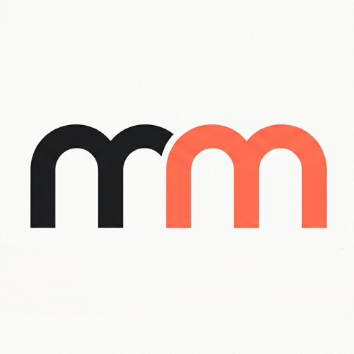

Miré la decisión contra cómo se evalúa una identidad fintech internacional: distintividad, defendibilidad legal, comportamiento en una tinta, accesibilidad, y si el símbolo dice algo del negocio. La estructura pasa. Lo que mostré hasta acá tiene cuatro defectos de ejecución que sí hay que corregir, y dos de ellos no los habíamos mirado.
El icono parte una letra; el wordmark parte una palabra. Es el mismo gesto dos veces, y es literalmente lo que hace el producto: pone dos opciones una al lado de la otra para que se vea la diferencia. Muy pocas marcas fintech tienen un símbolo que explique el servicio sin dibujarlo.
El hilo del icono y las colas de la palabra comparten pendiente, y el hilo nace en un rasgo de la letra. Nada arbitrario: es el criterio con el que un director de arte juzga si un sistema está diseñado o ensamblado.
El sector es azul y verde por defecto. El naranja diferencia de entrada y dice «oferta», no «banco» — correcto para alguien que no custodia dinero. La tinta cálida en vez del negro puro completa la distancia.
Todo lo que viste hasta acá aplica cursiva real e inclinación de CSS a la vez: las colas están doblemente inclinadas. Se ve más movido de lo que va a ser el archivo final. Comparalo:
La cursiva de Rubik no es la recta inclinada: tiene letras redibujadas. Es mejor letra y es la que hay que trazar. Y el ángulo del hilo del icono no lo elegimos nosotros: se lee de la fuente (el valor italicAngle) y se copia exacto. Si la cursiva de Rubik es 9,4°, el hilo va a 9,4°, no a 7°.
#EE5B3E sobre blanco da 3,4:1. Un logotipo está exento de la norma, pero «mundi» a 15px en el pie o en el widget se lee peor que el resto de la página, y eso sí lo notan los usuarios. La regla profesional es por tamaño:
Bicolor de 18px para arriba; una tinta de 18px para abajo. El pie, el widget, los emails y la letra chica van en tinta plena. No es una concesión: es lo que hace cualquier marca con un color claro en su paleta, y de paso resuelve el otro problema — el bicolor no sobrevive a una tinta.
Acá está el riesgo que no habíamos mirado. Una palabra en una fuente de licencia abierta, sin dibujo propio, es débil como marca figurativa: cualquiera puede escribir «mangomundi» en Rubik 700 y llegar a algo casi idéntico. Lo registrable con fuerza es la palabra (marca denominativa) y el lockup completo, no la letra sola.
La solución de oficio es meter un detalle propio en el trazado, algo que no salga de teclear la fuente. Dos que encajan con el sistema y no se ven forzados:
Los pies de las colas en cursiva se cortan a la misma pendiente del hilo, en vez del corte horizontal de la fuente. Un solo ángulo, ahora también en los remates.
En la unión «mango|mundi» la o y la m se acercan hasta casi tocarse, con el mismo hilo del icono entre las dos. La marca repite su gesto una tercera vez, y ahí sí el dibujo es propio.
Una m minúscula suelta, sin contexto, no dice «mangomundi» — dice «una eme». Eso está bien en el header, donde la palabra está al lado, y es un problema en avatar, favicon y app, donde el símbolo viaja solo.
La respuesta estándar no es cambiar el símbolo: es que el sello sea la pieza reconocible. Cuadro de marca, letra en negativo, siempre igual. Lo que se memoriza es el conjunto color+forma, no la letra.
El hilo se abre a medida que baja el tamaño, del 2,7% al 4%. Es la única cosa que cambia entre las cuatro piezas.
Arriba, bicolor con cursiva verdadera. Abajo, la versión de una tinta: el hilo del icono no desaparece porque es espacio, no color — por eso el corte funciona en negativo, en bordado y en un sello de goma. Esa es la prueba que separa un logo que se puede producir de uno que solo existe en pantalla.
Ocho archivos: lockup bicolor y una tinta, lockup en negativo, eme suelta en las tres versiones, sello, y el wordmark sin icono.
Definitiva en estructura, con las cuatro correcciones aplicadas. V1 + Rubik 700 con colas en cursiva verdadera está a la altura de una marca fintech internacional: tiene una idea que explica el negocio, un solo ángulo que gobierna el sistema, un color que la diferencia del sector, y sobrevive a una tinta y a 16px. Lo que no tiene todavía es dibujo propio — y eso se arregla con las dos costuras de la Corrección 3, que son medio día de trazado y la diferencia entre una marca registrable y una fuente tipeada.
Lo que yo no seguiría explorando: más tipografías, más ángulos, más variantes de corte. La marca ya tiene una razón para cada decisión, y eso es el techo de lo que se puede pedir antes de producirla. Decime si aplico esto a las cuatro pantallas de la versión final y armamos el handoff.
Esto cierra el razonamiento. La diagonal ya tenía coartada por el ángulo; anclándola en el valle —la muesca donde se encuentran los dos lomos— también tiene un punto de origen que la letra ya proporciona. El corte deja de ser algo que le hacemos a la eme y pasa a ser la prolongación de un rasgo suyo: el valle sigue bajando y separa las dos mitades. Es el nivel de justificación que se le pide a un logotipo.
Un detalle que conviene saber: el valle es el punto más bajo donde las dos mitades todavía están separadas — abajo de ahí el asta del medio es una sola masa de tinta. Así que el hilo, sí o sí, cruza el asta. La pregunta pasa a ser hacia dónde, y ahí el ángulo decide. Tres versiones:
El hilo entra por el valle y baja inclinado 7°, la misma pendiente que las colas. Cruza el asta del medio en diagonal: la tinta se queda con el primer lomo y el naranja con el segundo.
Dos justificaciones en un solo trazo —origen y ángulo—, y la diagonal sobre el asta lee como pliegue, no como corte accidental.
Mismo origen, pendiente invertida: se abre hacia la derecha al bajar. El asta del medio queda casi entera en tinta y el naranja se apoya en el segundo lomo.
Visualmente más estable —el naranja pesa menos—, pero el ángulo contradice a las colas del wordmark y se pierde la mitad del argumento.
El valle baja a plomo. Como el vértice cae sobre el flanco derecho del asta, el corte deja casi toda la masa central en tinta y el naranja arranca ya en el segundo lomo.
Ahora que nace en el valle ya no parece un error de registro: el problema del hilo vertical era el punto de partida, no la verticalidad. Es el reparto más desigual de los tres, y el que elegiría si el wordmark queda todo recto.
A la izquierda, las dos versiones al mismo cuerpo: en C1 el hilo cae en el hueco antes del asta y se ve como una raya suelta; en V1 nace en la muesca y se entiende de dónde viene. Los tres tamaños chicos muestran que el reparto de tinta aguanta.
Arriba a 52px, abajo el lockup de barra a 24px. Un solo ángulo gobierna el hilo del icono y las cuatro colas de la palabra, y el origen del hilo es un rasgo de la propia letra. Ya no queda nada arbitrario en la marca.
Las muestras de acá cortan con porcentajes, que es una aproximación: en el SVG final la línea se ancla al punto exacto del vértice del valle y baja a 7° desde ahí. Vale la pena un ajuste óptico al llegar al asta —donde el hilo cruza tinta— porque un hilo de grosor constante parece adelgazarse al atravesar una masa oscura; se compensa abriéndolo un 10% en ese tramo. Eso es medio día de dibujo, no un rediseño.
Con V1 la identidad queda cerrada: Rubik 700, «mango» tinta y «mundi» naranja con colas a 7°, icono de una sola eme partida por un hilo que nace en el valle y baja al mismo ángulo, más el sello oscuro para 16px y abajo.
Diste con el problema exacto. El hilo vertical no se ve bien porque no tiene coartada: en una letra recta, una vertical blanca solo puede leerse como un error de registro de imprenta. La diagonal al mismo ángulo que las colas en cursiva sí la tiene — repite un gesto que ya existe en la marca, así que el ojo la lee como decisión. Y de paso es más larga que la vertical, así que sobrevive mejor a tamaño chico.
Abajo, seis maneras de pintarla. Las dos primeras son tu idea; las cuatro siguientes son las otras familias que vale la pena considerar antes de cerrar.
El mismo hilo de antes, inclinado 7°. Cruza el asta del medio en diagonal, así que el corte se ve intencional y rima con las colas del wordmark. Cada color conserva un arco entero.
Es la única de las seis que suma información en vez de solo teñir: dice «dos mitades» y «movimiento» con el mismo trazo.
Los dos colores se encuentran sobre la misma diagonal, sin blanco. La letra queda entera y el corte se lee igual porque el ángulo ya lo delata.
Gana en solidez y a 16px no se rompe nunca. Pierde el aire que hace que el gesto se note a primera vista.
Lo que veníamos mirando, para comparar de costado. Puesto al lado de C1 se ve el problema: nada en la letra justifica esa vertical.
Sigue siendo válido si mañana el wordmark queda todo recto, sin colas en cursiva. El ángulo del icono tiene que venir de algún lado.
Dos emes superpuestas: la naranja corrida e inclinada 7° detrás de la tinta. El movimiento se vuelve literal — una eme adelantándose a la otra.
Muy expresiva, pero deja de ser una letra limpia: a 24px las dos capas se empastan y hay que dibujar una versión simplificada aparte.
Sin corte: la eme en tinta y el naranja reservado para «mundi» en la palabra. El icono se vuelve un ancla silenciosa.
La más sobria y la más barata de mantener — un solo archivo para todo. Pierde el color de marca justo en la pieza que más viaja sola.
La diagonal aplicada en negativo dentro del cuadro de marca: blanco y blanco atenuado sobre naranja. Máxima presencia en avatar y app.
Va como variante, no como principal: un cuadro de color lleno compite con cualquier interfaz donde se apoye.
Al inclinarse, el hilo recorre más letra y por eso sigue visible a 20px, donde la vertical ya se perdía. De 16px abajo, igual que antes, va el sello.
Acá se ve por qué funciona: el hilo del icono y las colas de la palabra tienen exactamente la misma pendiente. Un solo ángulo gobierna toda la marca — es lo que hace que un sistema se sienta diseñado y no ensamblado.
C1 como principal —diagonal a 7° con hilo—, C2 para una tinta y bordado donde el blanco no existe, y el sello oscuro para 16px y abajo. Tres archivos derivados de un solo dibujo, y un único ángulo compartido con el wordmark.
Una consecuencia a tener presente: si elegís C1, las colas en cursiva del wordmark dejan de ser opcionales — son la explicación del ángulo del icono. Sin ellas, el mejor corte vuelve a ser el vertical (C3).
Y por una razón concreta: el icono deja de parecerse al wordmark y pasa a ser el wordmark. Es la misma letra, de la misma fuente, en el mismo peso — Rubik 700 — así que la coherencia no depende de que alguien afine bien un dibujo: es estructural. La eme común con patita, no la monolineal redondeada. Y el corte en dos colores con un hilo de blanco convierte una sola letra en las dos mitades del nombre.
Además resuelve de una vez los tres problemas que le encontré al icono anterior: no repite la palabra (es una letra, no la sigla), pasa de 2,9:1 a 1,6:1, y no tiene contraformas finas que se cierren, porque las contraformas son las de una tipografía diseñada para leerse chica.
El corte es una vertical limpia y el espacio se mide en porcentaje del ancho, no en píxeles, así que crece solo cuando el icono crece. Las cuatro variantes cambian dónde cae la vertical y cuánto abre.
Los dos colores se tocan y el ojo lee una mancha con dos tintas, no dos partes. Además a tamaño chico el borde vibra.
Corta justo antes del asta del medio, que se va con el naranja: cada color queda con un arco entero y su pata. El hilo se ve pero no separa la letra en dos pedazos.
Más aire: el gesto se lee incluso a 20px. A cambio la letra empieza a verse cortada en dos piezas más que teñida en dos colores.
La vertical parte el asta del medio al medio. Más simétrico, pero el asta partida se lee como un error de registro de imprenta.
Versión recta, sin cursiva. La eme del icono y las dos emes de la palabra son el mismo dibujo al mismo peso: no hay nada que afinar para que combinen.
El movimiento que te gustaba, sin tocar las emes: quedan rectas y son idénticas a la del icono. La marca gana ritmo y el símbolo sigue siendo su letra exacta.
En negativo el hilo pasa a ser el fondo oscuro, así que el corte se lee igual sin ningún ajuste. El naranja sube a #FF8A6B por contraste.
De 64 a 28px el hilo sostiene. De 24px para abajo hay que abrirlo a 2,5–3% y pasar al sello oscuro, donde el hilo es el propio fondo: es la única variante que hay que exportar aparte, y sirve de favicon, avatar y app.
Se traza la m de Rubik 700 a curvas y se corta con una vertical, dejando el hilo como espacio real entre dos rutas cerradas. No es una eme con una línea blanca encima: son dos formas independientes, así que funciona en negativo, en una tinta y en bordado.
Rubik es de licencia abierta (SIL OFL), así que trazar la letra y usarla como logotipo está permitido, incluido el registro de marca sobre el dibujo resultante. Es la razón práctica por la que elegiría Rubik antes que una comercial.
Entregables: eme partida en color, en negativo y en una tinta; sello cuadrado; lockup horizontal; y el wordmark en sus dos versiones. Ocho archivos, un solo dibujo.
Tipografía de marca: Rubik 700, minúsculas, «mango» en tinta y «mundi» en naranja. Icono: una sola m de la misma Rubik 700, partida por una vertical con hilo de 1,5% justo antes del asta del medio (G2). Variante chica: sello oscuro con la eme en negativo. Emes siempre rectas; las colas en cursiva a 7° son opcionales y las decidís mirando los dos lockups de arriba.
Con esto la identidad está cerrada. Decime si aplico este logo a las cuatro pantallas de la versión final y armamos el handoff, o si querés ver antes el hilo a otro porcentaje.
Tu icono son dos m minúsculas monolineales, arcos semicirculares, terminales cortadas a escuadra, bicolor. El dibujo está bien. Tiene tres problemas de sistema, y ninguno es estético:
Junto al wordmark dice «mm mangomundi». El símbolo repite lo que la palabra ya dice, así que no agrega significado: solo ancho.
Es el doble de ancho que de alto. En favicon, avatar y app —todos cuadrados— hay que encogerlo tanto que las dos emes se vuelven cuatro manchas.
El grosor del trazo mide casi lo mismo que el hueco del arco. A 16px los huecos se cierran y queda un bloque sin forma.
La coherencia con las letras no se consigue copiando su forma, sino compartiendo reglas de construcción: mismo grosor de trazo que el asta de la tipografía al mismo cuerpo, mismo corte de terminal, misma relación entre altura de x y ancho. Con esas reglas fijas, un símbolo redondo y una palabra estructural pertenecen a la misma familia sin repetirse.

mangomundiA 16px las dos emes ya no se distinguen. El recuadro que ves es el archivo cuadrado con el símbolo ancho adentro, así que el dibujo ocupa menos de la mitad del cuadro.
Una eme, dos arcos, un color cada uno: el bicolor y las dos partes del nombre siguen ahí, pero con la mitad del ancho y sin repetir la palabra. Pasa de 2,9:1 a 1,4:1 — sigue siendo horizontal, pero ya entra en un favicon o un avatar sin encogerse a la mitad.
Es también la que mejor comparte reglas con D1: el trazo mide lo mismo que el asta de la tipografía y los pies se cortan a escuadra, igual que la m de la palabra.
Mismo concepto, tres correcciones medibles: el hueco del arco pasa a medir 11 contra un trazo de 8 (antes eran casi iguales, y por eso se cerraba a 16px), los pies se alargan a más del triple del radio para que se lean como letras y no como arcos sueltos, y el dibujo crece dentro del cuadro — del 29% al 46% del alto del marco.
Si querés conservar el icono que ya circulaste, esta es la vía. Sigue siendo 2:1 —inevitable con dos emes— y sigue repitiendo la palabra.
Las dos emes en dos pisos, con los arcos ensanchados y el interlínea ajustado para que la mancha quede cuadrada (69 × 70 unidades). Es la pareja natural de D3, el wordmark de dos líneas.
Cede: dos emes apiladas leen antes como patrón que como letras, y sigue repitiendo la palabra.
No es otro logo: es la variante de I1 para tamaños chicos. Trazo más grueso, pies más cortos y contenedor sólido, porque a 16px un símbolo en negativo dentro de una caja siempre gana contra un trazo suelto.
Todo sistema de marca necesita esta pieza. Si elegís I1, esta viene con ella.
El grosor del símbolo iguala el asta de la m del wordmark al mismo cuerpo. Es la regla que hace que se vean de la misma mano.
Los pies se cortan rectos, nunca redondeados: es el mismo corte que ya tiene tu icono y el que tiene la tipografía estructural.
El hombro es medio círculo exacto, sin óvalo. Acá vive toda la redondez de la marca — la palabra no la necesita.
La contraforma del arco siempre mide más que el trazo. Es la corrección que hace que el símbolo sobreviva a 16px.
Mi respuesta: I1 con I4 como variante chica, y el wordmark D1. Una eme, dos arcos, dos colores — el nombre completo queda dicho por la palabra y el símbolo pasa a significar «las dos mitades» en vez de repetir letras. Los dibujos de acá son geometría exacta, listos para trazar: el SVG final solo necesita el ajuste óptico del empalme entre los dos arcos, donde el trazo se ve un pelo más grueso de lo que mide.
Tu instinto está bien. El asunto no es cuál redondeada: es que «mangomundi» tiene diez letras y la eme aparece dos veces en posición fuerte. Una eme redondeada sola es un gesto; dos, en una palabra larga y minúscula, se convierten en textura blanda — y a 15px la palabra pierde el borde que necesita un comparador de precios. Veníamos forzando que la palabra rime con el icono, y en identidad la regla suele ser la inversa: el símbolo aporta la redondez, la palabra aporta la estructura. El contraste hace que las dos partes se vean; la rima hace que se anulen.
Abajo, cuatro caminos estructurales — no cuatro fuentes más. Cambia qué hace cada pieza, no el tipo de letra.
Las emes vuelven a ser rectas y estructurales; la redondez vive solo en el símbolo. Tracking cerrado para que las diez letras se lean como un bloque. Es lo que hacen la mayoría de las marcas con símbolo geométrico fuerte: no repiten el gesto, lo contrastan.
Cede: pierde la rima literal con el icono. Gana: legible a 11px, adulto, y el icono resalta más justamente porque la palabra no compite.
Las dos emes son redondeadas y el resto estructural: la rima queda, pero concentrada. Es el camino intermedio y el más laborioso — en el SVG hay que empatar altura de x, grosor y espaciado entre dos alfabetos distintos.
Riesgo real: si el injerto no está perfecto, no lee como decisión sino como error de fuente. Y a 15px, como se ve arriba, el salto entre las dos formas se nota.
Las dos emes se alinean en vertical y el bicolor deja de necesitar explicación: se ve que son dos palabras. El icono crece y el lockup se vuelve casi cuadrado — ideal para avatar, sello y app.
Cede: no entra en una barra de 66px de alto. Necesita la versión de una línea como variante secundaria, que es trabajo doble de mantenimiento.
La palabra baja a rango de texto y el símbolo pasa a ser la marca. En favicon, widget, avatar y app va el icono solo — que es donde una palabra de diez letras nunca funciona.
Cede: reconocimiento. A un símbolo abstracto le lleva años ganarse eso, y todavía no tenés el tráfico para pagarlo. Yo lo guardaría para dentro de dos años.
Sí se puede hacer mejor, y es D1. Emes rectas, tracking cerrado, bicolor, y la redondez concentrada en el símbolo que ya tenés. Es más sobrio, aguanta 11px, y hace que el icono se vea más — no menos. Lo que veníamos probando (repetir el arco en la palabra) es lo que estaba haciendo que se viera blando.
Si te tira lo redondeado, la salida honesta no es D2 sino D3: dos pisos, las emes alineadas, y ahí sí una redondeada funciona porque la palabra se ve corta. Lo que no haría es seguir buscando fuente: ya probamos diecisiete y el problema no era la fuente.
Todo esto sigue siendo aproximación con fuentes de Google. En el SVG final hay dos ajustes que ninguna fuente da: cerrar el espacio entre la o y la m del medio (donde se parte la palabra en dos) y bajar apenas el punto de la i para que no choque con el borde del lockup.
Ocho familias que no vimos antes, ninguna repetida de las tandas anteriores, más F1 y F8 (Poppins) tal como estaban. Cada tarjeta muestra el wordmark a 30px junto al icono, la «mm» aislada para comparar el arco con el tuyo, y la misma palabra a 15px — el tamaño real del footer, del widget y de un email, donde se cae la mitad de los candidatos.
Tu icono son dos arcos monolineales con eme de un piso. La palabra tiene que sostener tres cosas a la vez: arco redondo que rime con el icono, peso suficiente para que la inclinación lea como empuje y no como error, y legibilidad a 15px. Las redondeadas puras (Baloo, Fredoka, Dosis) ganan en lo primero y suelen perder en lo tercero; las humanistas (Nunito, Figtree, Urbanist) empatan en todo sin destacar en nada. Marqué en verde las tres que yo defendería.
{{ f.note }}
Sin cambios respecto de lo que aprobaste como candidatas. La única diferencia entre las dos es la cola: recta en F1, cursiva verdadera en F8.
{{ f.note }}
HANDOFF.md.Rubik 700 con «ango» y «undi» en Rubik Italic 700 — cursiva verdadera, nunca skewX: el ángulo no se elige, se lee del italicAngle de la fuente y es el mismo que gobierna el hilo del icono. Abajo, el sistema completo — lockups, tamaños mínimos, versión sobre oscuro y usos incorrectos.
Icono y palabra separados por el ancho de una eme. El icono nunca se escala respecto de la palabra: su alto es igual al alto de la m más un 15%.
Sobre fondos oscuros el naranja sube a #FF8A6B: el #EE5B3E de marca no llega a 4.5:1 contra #120E0B.
Debajo de 90px de ancho total, solo el icono: la palabra deja de leerse antes que el símbolo.
A 11px la cursiva empieza a cerrar la a: por debajo de 12px va la versión recta, sin inclinación. Es la única excepción del sistema y hay que dejarla escrita en el manual.
«mango» siempre en tinta, «mundi» siempre en naranja. Nunca al revés, nunca los dos del mismo color salvo en negativo de un solo tono.
No inclinar las emes. Son el ancla que repite el icono.
No pasar de 8°. A 16° la vertical y la cola dejan de parecer del mismo alfabeto.
No usar mayúsculas. El arco de la eme minúscula es lo que rima con el icono.
No poner el bicolor sobre naranja. Sobre color de marca va en blanco pleno.
Cerrado. La marca quedó definida como Rubik 700 con colas en cursiva verdadera e icono V1 —una sola m partida por un hilo que nace en el vértice del valle— y ya está aplicada a las cuatro pantallas de Mangomundi 4 - Final, con los archivos exportados en Mangomundi 6 - Marca y assets y la especificación en HANDOFF.md. Lo único pendiente es el SVG trazado, con las dos costuras propias del manual: las terminales de las colas cortadas al ángulo del hilo, y la unión «mango|mundi» con ese mismo hilo entre la o y la m. No bloquea el handoff — el código carga el SVG cuando exista y la fuente mientras tanto.